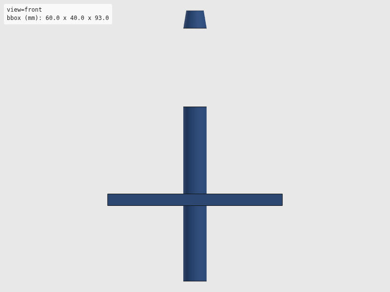
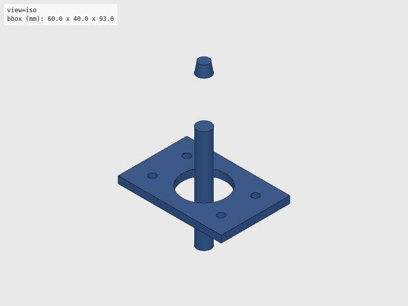
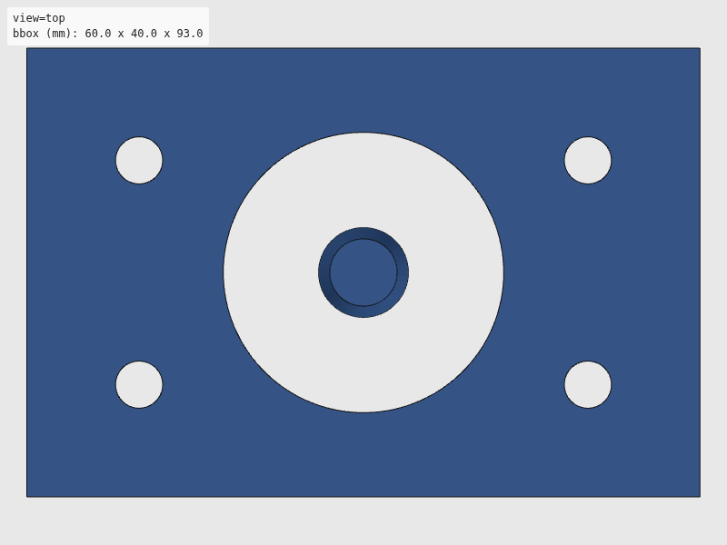
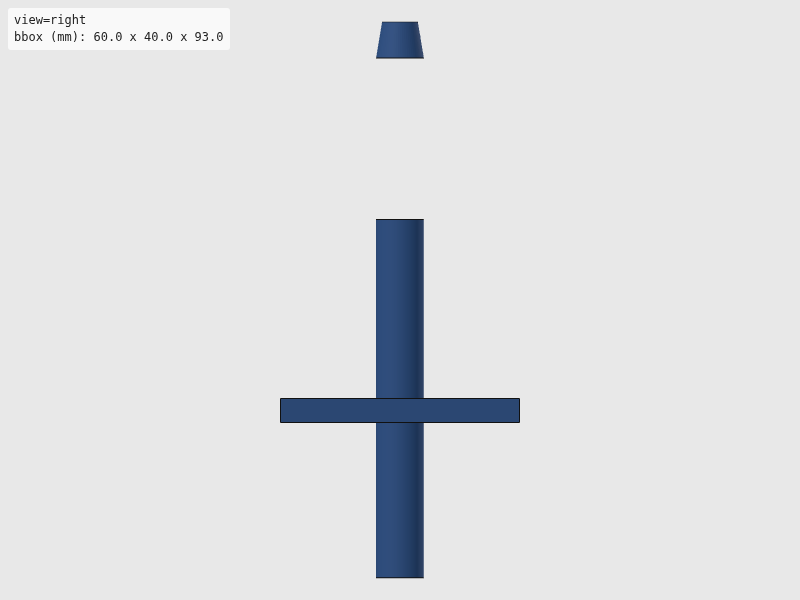

Verdict: review
Green is necessary, not sufficient: these checks cannot see local defects. Look at the render and decide.




The intent as written, for comparison with the renders. Not checked.
"""Tip ejection post — fixed post for mechanical tip removal.
The dPette/dPette+ uses a top-mounted push-button ejector: thumb presses
a button on top of the handle → internal rod pushes ejector sleeve down
→ tip pops off the cone. Spring returns the mechanism.
For robotic automation, the pipette is positioned so the ejector button
presses DOWN against a fixed post or crossbar. The gantry/arm lowers
the pipette onto the post, which activates the ejector.
Design: an inverted-T post — vertical post with a rounded tip at the
correct height to contact the ejector button, plus a wide base for
mounting to the waste bin frame.
Works with both XZ gantry (lower Z onto post) and SO-101 (arm pushes
pipette down onto post).
Usage:
uv run --group cad python hardware/cad/dpette/tip_ejection_bar.py
"""
# Shared export helper (standalone mode)
import sys
from pathlib import Path
from build123d import Box, Cone, Cylinder, Pos
sys.path.append(str(Path(__file__).resolve().parent.parent))
from util.export import export_part
sys.path.pop()
# --- Parameters (all in mm) ---
# Post dimensions (contacts the top-mounted ejector button)
POST_DIAMETER = 8.0 # Rounded post tip — fits inside button recess
POST_HEIGHT = 60.0 # Must clear the tip + nozzle below the button
POST_TIP_RADIUS = 3.0 # Rounded top to center on button
# Base plate (bolts to frame, straddles waste bin)
BASE_LENGTH = 60.0
BASE_WIDTH = 40.0
BASE_THICKNESS = 4.0
# Gusset (triangular reinforcement, post-to-base)
GUSSET_HEIGHT = 20.0
GUSSET_THICKNESS = 3.0
# Mounting
BOLT_HOLE_D = 4.2 # M4 clearance
BOLT_SPACING_X = 40.0
BOLT_SPACING_Y = 20.0
# Waste bin opening in base (tips fall through)
WASTE_HOLE_D = 25.0
def build_tip_ejection_bar():
"""Build tip ejection post with base plate.
The post sticks up from the base. The pipette is lowered so its
ejector button contacts the rounded post top, pressing it down
to eject the tip. The tip falls through the waste hole in the base.
"""
# Base plate
base = Box(BASE_LENGTH, BASE_WIDTH, BASE_THICKNESS)
# Waste hole in center of base (tips fall through)
waste_hole = Cylinder(WASTE_HOLE_D / 2, BASE_THICKNESS + 1)
base = base - waste_hole
# Mounting holes (4x M4 at corners)
bolt_positions = [
(-BOLT_SPACING_X / 2, -BOLT_SPACING_Y / 2),
(BOLT_SPACING_X / 2, -BOLT_SPACING_Y / 2),
(-BOLT_SPACING_X / 2, BOLT_SPACING_Y / 2),
(BOLT_SPACING_X / 2, BOLT_SPACING_Y / 2),
]
for bx, by in bolt_positions:
bolt = Pos(bx, by, 0) * Cylinder(BOLT_HOLE_D / 2, BASE_THICKNESS + 1)
base = base - bolt
# Vertical post (offset from waste hole so tip falls clear)
post = Pos(0, 0, BASE_THICKNESS / 2) * Cylinder(POST_DIAMETER / 2, POST_HEIGHT)
# Chamfered post tip (cone for self-centering on button)
tip_cone = Pos(0, 0, BASE_THICKNESS / 2 + POST_HEIGHT) * Cone(
POST_DIAMETER / 2, POST_TIP_RADIUS, POST_TIP_RADIUS * 2
)
return base + post + tip_cone
def export(part) -> None:
"""Export to STL and SVG."""
export_part(part, "dpette", "tip_ejection_bar")
if __name__ == "__main__":
export(build_tip_ejection_bar())
| Check | Status | Detail |
|---|---|---|
| file_integrity | PASS | binary STL: header present, 4308 triangles, file length matches 84 + 50*n |
| watertight | PASS | watertight=True, winding_consistent=True, euler_number=-4 (reported only, not asserted — plan §7.2) |
| bbox | SKIP | no --envelope given |
| volume | SKIP | no --volume-band given |
| browser_load | PASS | viewer reported body[data-state]=rendered |
| render | PASS | 4 view(s) captured at 800x600 |